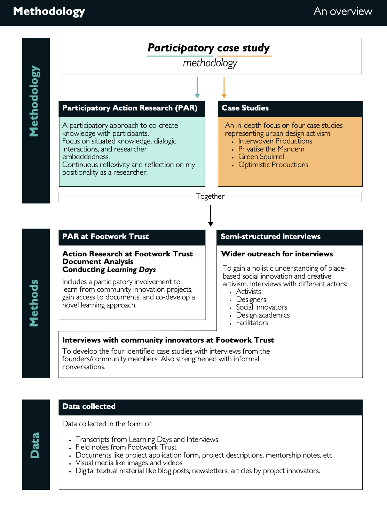
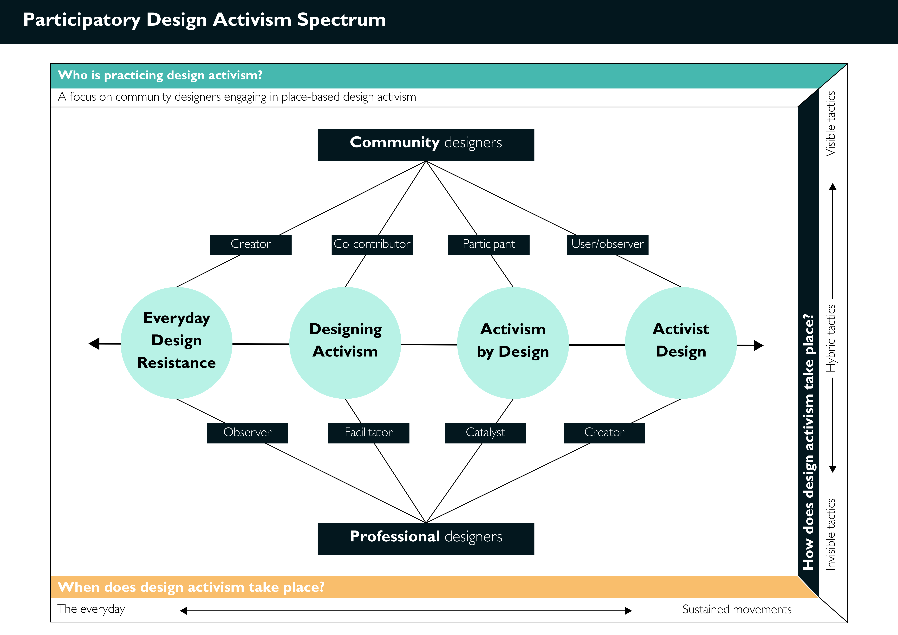
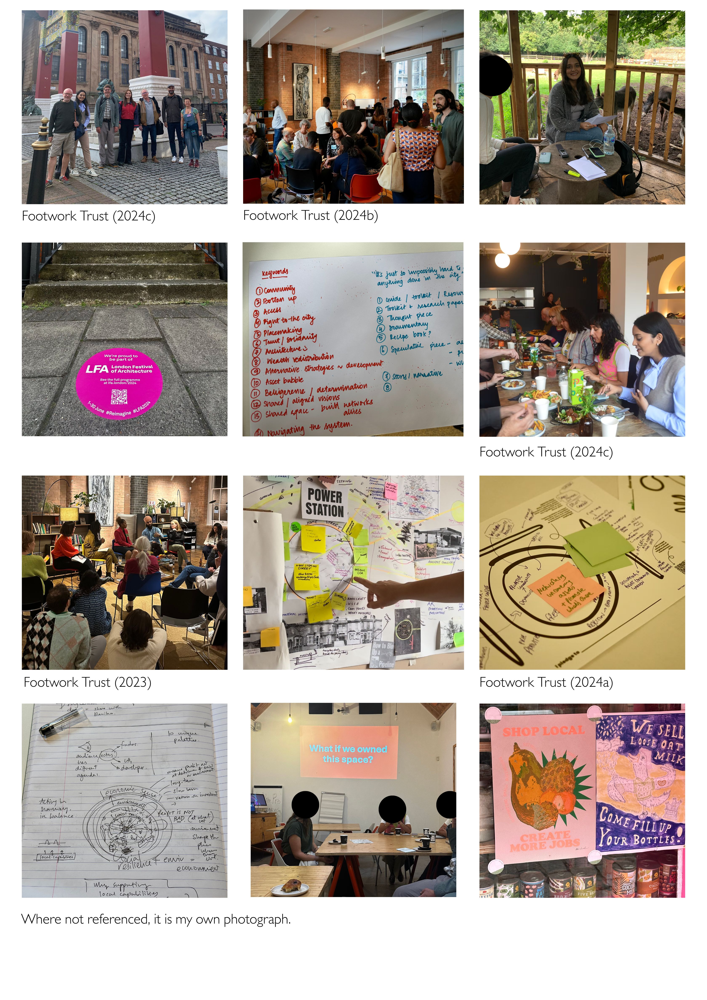

Awarded the Arts & Humanities Research Council (AHRC) Technē Doctoral Training Partnership Grant — valued at approximately £150,000. One of the most competitive doctoral funding schemes in the UK.
The Research Question
How can we expand the definition of design activism to encompass more community-led approaches to social transformation?
Most design activism scholarship focuses on professional designers acting on behalf of communities. The underlying assumption is that communities are recipients of design expertise — guided, facilitated, given a voice by trained practitioners who know better.
This thesis challenged that assumption directly. It argued that design activism literature is undemocratic — that the distinction between expert and non-expert designers is exclusionary, patronising, and exacerbates the very vulnerabilities it claims to address.
Starting from the conviction that all people are designers — equipped with designerly ways of knowing and the capacity to change situations into preferred ones — the research set out to understand how community members without professional design training engage in creative resistance as a form of sociopolitical action.
Central Research Question
How do design repertoires facilitate participation from citizen designers in design activism?
Sub-question 1
How can we expand the definition of design activism to include more community-led, generative ways of social transformation?
Sub-question 2
What are the different manifestations, tactics and repertoires deployed by citizens to perform design activism?
Sub-question 3
How can expert designers facilitate citizens to practice design activism?
"Design can manifest in many ways, by many people."
Core argument of the thesisMy Approach
Embedded, participatory, and grounded in lived experience
The research is underpinned by a decolonial feminist lens rooted in the values of relationality, pluralism and equity, emphasising a decentred positionality of the professional designer such that design activism can be comprehended from a community-led perspective.
A participatory case study methodology was employed: an amalgamation of participatory action research (PAR) and case studies. I established an embedded research relationship with Footwork Trust, a non-profit organisation providing philanthropic funding to urban social innovation projects across the UK. This gave me access to twenty social innovation projects across the People and Place programme of 2023 and 2024, as well as to a wider network of community innovators, architects, building developers, social impact researchers, academics and policymakers.
Research at Footwork Trust involved action research conducted twice a week over one year and nine months. I co-developed a novel Learning Day approach: visiting projects to engage with innovators, conduct formal interviews, undertake walking tours to understand local context, and converse with community members and stakeholders. This method was designed to generate rich, situated knowledge rather than extract data.

Original Contribution
The Participatory Design Activism Spectrum
The central theoretical contribution of the thesis is a novel conceptual framework — the Participatory Design Activism (PDA) Spectrum — which proposes an expansive, community-led definition of design activism along a dynamic continuum.
The spectrum maps four distinct categories of design activism, ranging from everyday practices to sustained movements. It describes the processes, repertoires and participation strategies deployed at each level — and, crucially, how community and professional designers relate to each other differently across the spectrum.
Everyday Design Resistance
Quotidian, implicit forms of creative resistance embedded in daily life and community practice. Recognises how minor gestures accumulate into social change.
Designing Activism
Communities planning and organising activist activities using designerly approaches such using creativity to frame grievances and mobilise others. How design principles, methods and methodologies can be deployed by designers as well as professional designers.
Activism by Design
Illustrates how professional designers seek, practice and encourage participation from non-designers. Exploring how design influences participation by communities towards sociopolitical transformation
Activist Design
The manifestation of design (things, objects, services, campaigns) that is activist in nature. How design or visual elements of creativity can manifest in social movements and protests.

The Four Case Studies
Urban design activism from Exeter to Walthamstow, London
Four case studies were developed through the PAR at Footwork Trust, each representing a different manifestation of community-led urban design activism across the UK.
Interwoven Productions (Exeter) — amplifying marginalised voices in neighbourhood regeneration through a novel participatory methodology for community engagement.
Privatise the Mandem (London) — a manifesto and campaign challenging discrimination and socioeconomic inequalities in council housing estates, using identity politics and counter-framing as design tools.
Green Squirrel (Cardiff) — building environmental resilience through digital and physical platforms that enable community members to practise everyday creative resistance through sustainable actions.
Optimistic Productions (London) — an artivist organisation blending activism, creativity, rebellion and filmmaking through projects including Bank Job and Power Station.

Findings & Outcomes
What three years of embedded research revealed
The research identified four key roles through which community designers practice design activism: framing, making (and remaking), brokering, and infrastructuring. Each operates differently across the spectrum and reveals the sophistication of community-led design practice.
Counter-framing emerged as a significant first move in design activism as community members problematise their grievances through storytelling, manifestos and disobedient objects to form problem statements that mobilise others. Infrastructuring proved equally significant, as community designers create platforms, methodologies and guides that transfer their design repertoires to other actors, ensuring impact beyond the duration of individual projects.
Crucially, the research found that activities across the spectrum overlap and two or more categories can operate simultaneously. Revealing design activism as an emergent, complex culture rather than a linear process. This insight has implications for how practitioners, funders and policymakers understand and support community-led change.
The PDA Spectrum was applied iteratively at Footwork Trust by informing the Learning Day methodology, shaping the People and Place programme, and translating into outputs including blogs and documentary films distributed to the organisation's wider network of social innovators, funders and architects.
Original contribution to knowledge
A community-led perspective of design activism, an original Participatory Design Activism Spectrum, and a framework for understanding the interrelationship between repertoires, tactics and community participation. This was applied both theoretically and in practice at Footwork Trust.
What I learned
The PhD taught me that the most important research decisions are methodological ones. Choosing to be embedded at Footwork Trust rather than conducting external interviews changed everything. It gave me access to the texture of community innovation, the informal conversations, the setbacks and pivots that never appear in formal data. That embeddedness is what made the research generative rather than extractive.
It also confirmed something I now bring to every service design project: that communities are not research subjects. They are co-creators of knowledge, and the quality of your research depends entirely on the quality of your relationship with them. The Learning Day methodology I developed (combining interviews, walking tours and community conversation) was built around that conviction.
The decolonial feminist lens underpinning the research was not just a theoretical commitment. It shaped every practical decision: who I interviewed, how I framed questions, how I analysed data, how I wrote up findings. Maintaining that reflexivity across three and a half years required continuous effort and was the most valuable training I received.
If I were doing this again: While the tenets of the research are rooted in collaboration and co-construction of knowledge over the period, the conceptual framework has been applied to four case studies.This decision has been made considering the time constraints of a doctoral research project and offers depth of investigation as opposed to a breadth of numerous sample cases. While the selected cases demonstrate rich diversity of grievances, design capabilities, approaches, participants and urban contexts in the United Kingdom, I recognise that they cannot be considered representative of all similar placemaking initiatives that practice DA. Selecting cases from the United Kingdom limits the type of grievances, design tactics, dominant policies and demographics involved. For example, cases from the Global South would entail a study of different sociopolitical concerns, cultures, design capabilities, demographics and approach to urban activism. Further deeper engagement with more projects, albeit from the repository of twenty projects funded by Footwork Trust, would also prove beneficial to explore the categories described in the PDA spectrum more comprehensively.
Read the Thesis
'Neither an activist nor a designer' — Read the full thesis →Published in the Loughborough University Institutional Repository, 2025.